Atividades e Eventos
Descobre o que temos vivido e o que aí vem
📍 Próximo Evento: Magusto Escutista 2025
2ª Edição do Magusto Escutista
Novembro é tempo de celebrar S. Martinho! Uma noite de convívio com família e amigos, música ao vivo e castanhas quentinhas na Escola Afonso Sanches. Entrada: 3€ (inclui cartucho de castanhas).
Luz da Paz de Belém 2025
"UMA LUZ QUE NOS ORIENTA!". Missão solidária com recolha de alimentos não perecíveis. Percurso por Formariz, Lapa, Misericórdia e chegada à Igreja Matriz às 19h. Traga a sua lanterna!
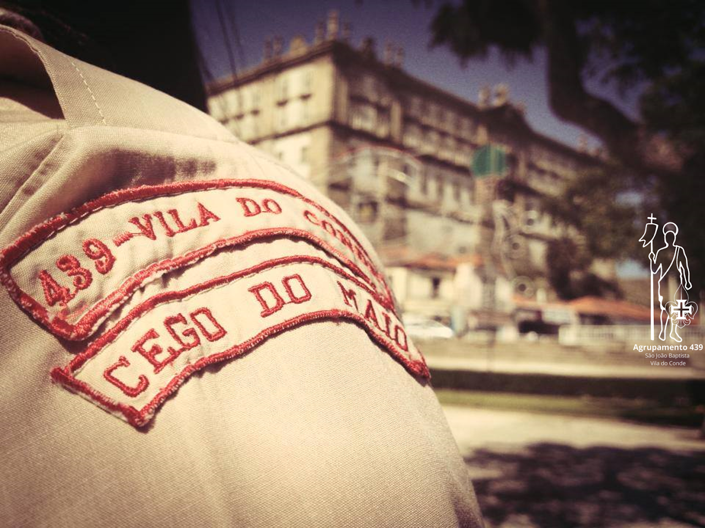
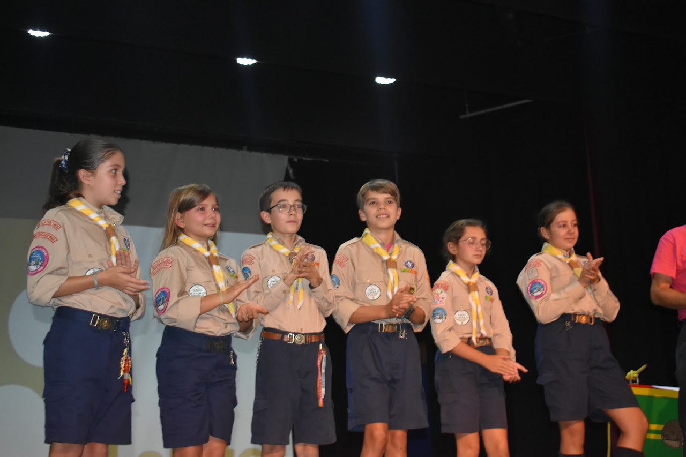
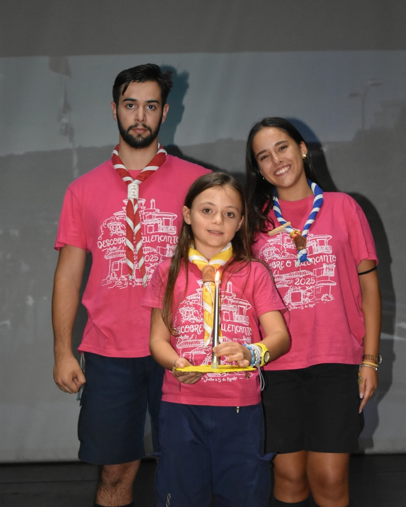
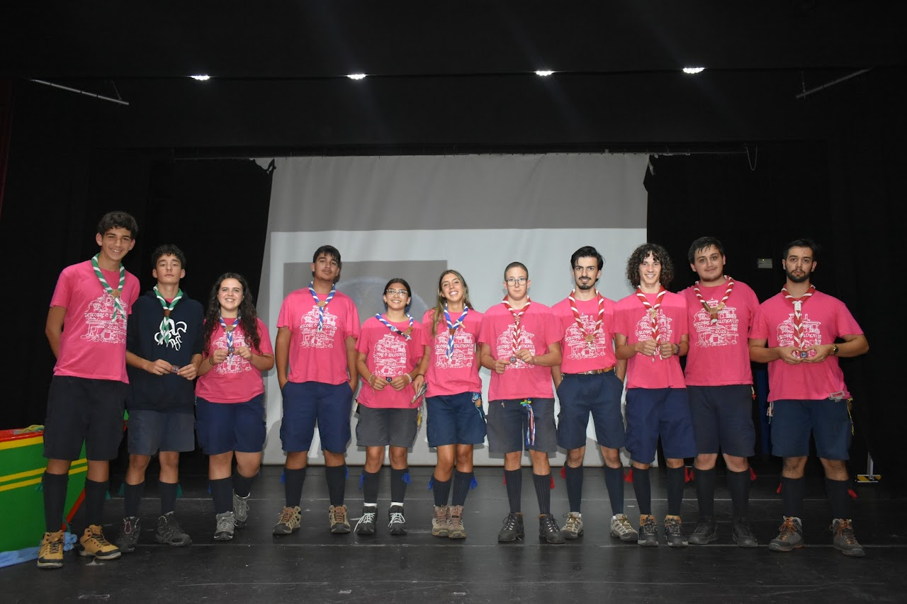
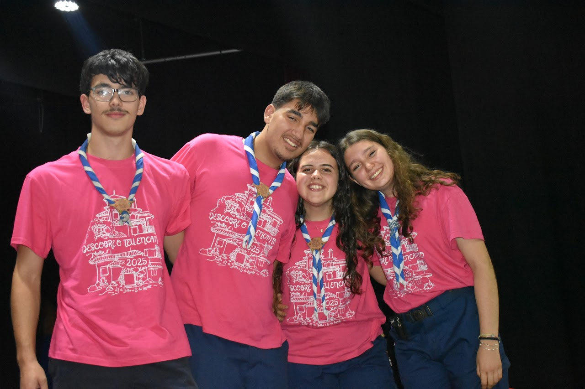
Festa Grande Atividade - Fontelo
Uma semana inesquecível em Fontelo com a atividade "Descobre o teu Encanto". Momentos de aventura, superação e união que marcaram o encerramento das nossas atividades de verão.
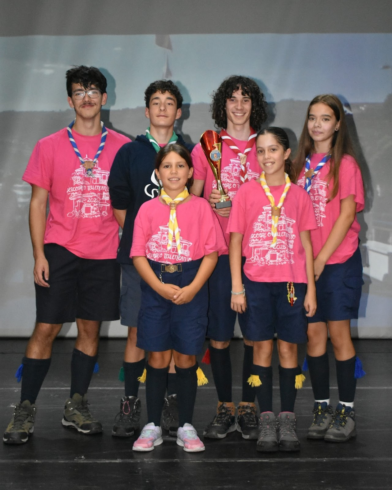
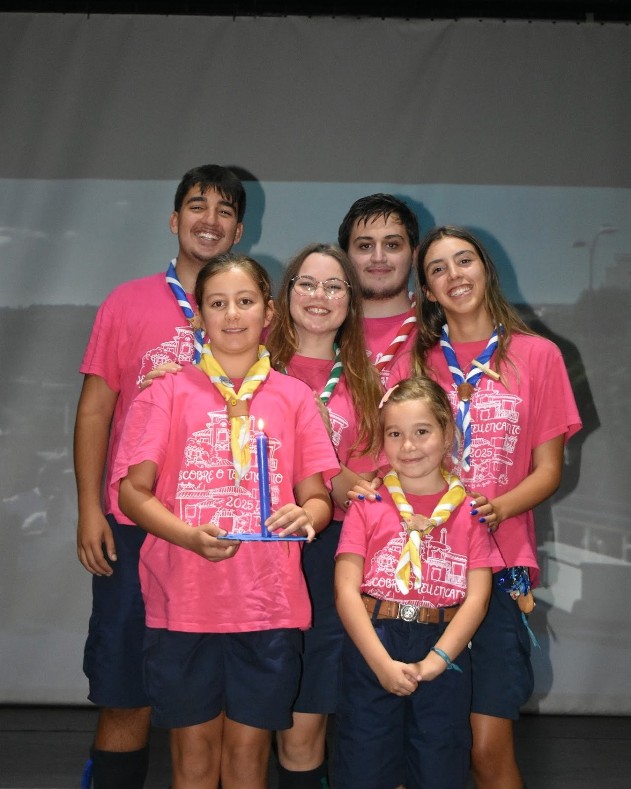
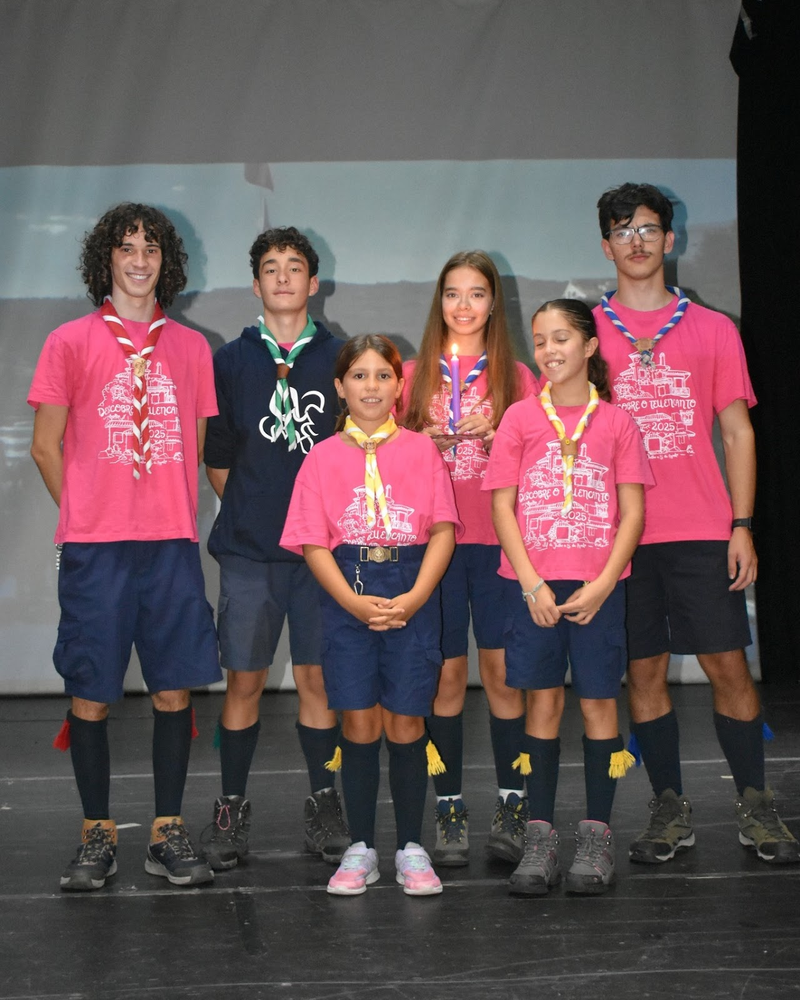
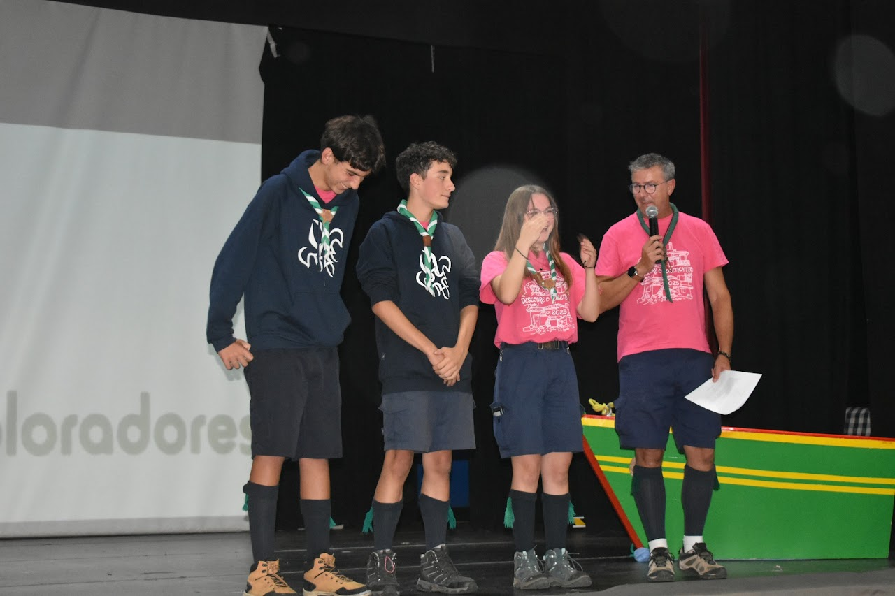
Encerramento do Ano Escutista
Noite de fogueira, promessas, passagens e cerimónia de entrega de anilhas de mérito. Celebrámos o crescimento de cada escuteiro e o espírito de família do Agrupamento 439.
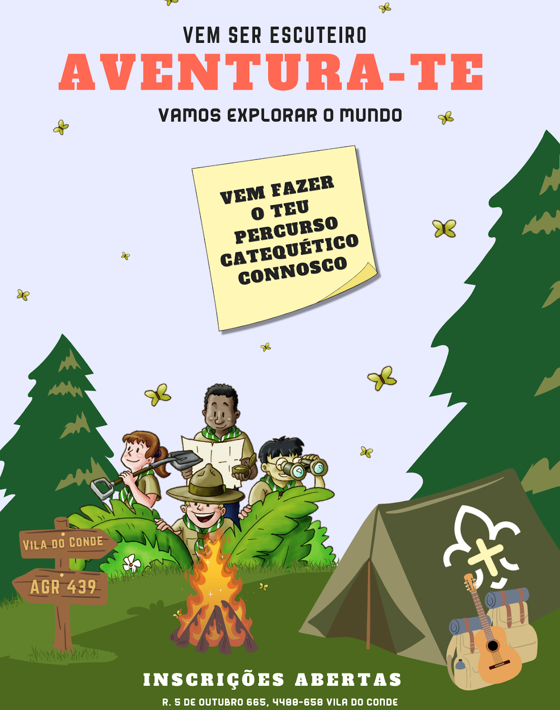
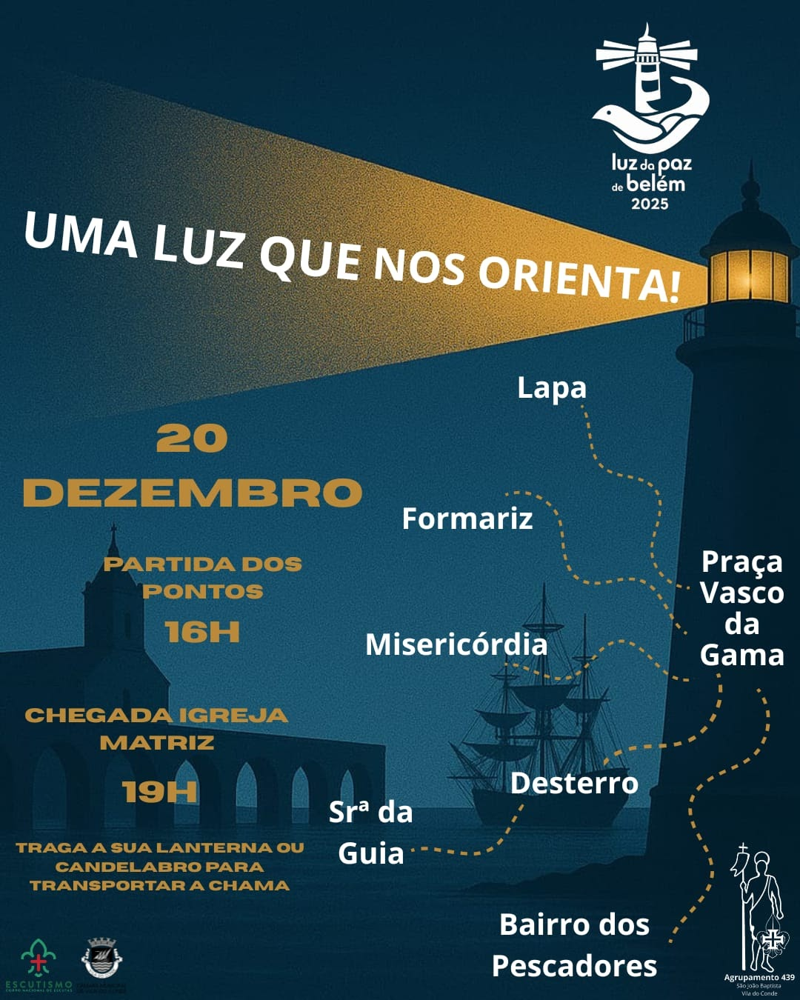
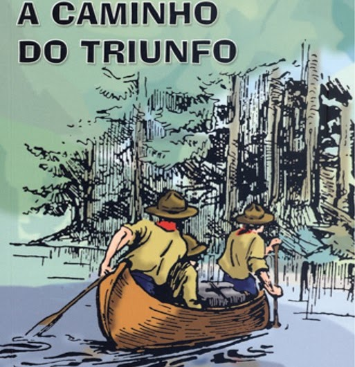

Promessas de Agrupamento - Igreja Matriz
Um marco na vida dos nossos escuteiros. A cerimónia de Promessas na Igreja Matriz de Vila do Conde, onde renovámos o nosso compromisso com a Lei e os Princípios do Escutismo.
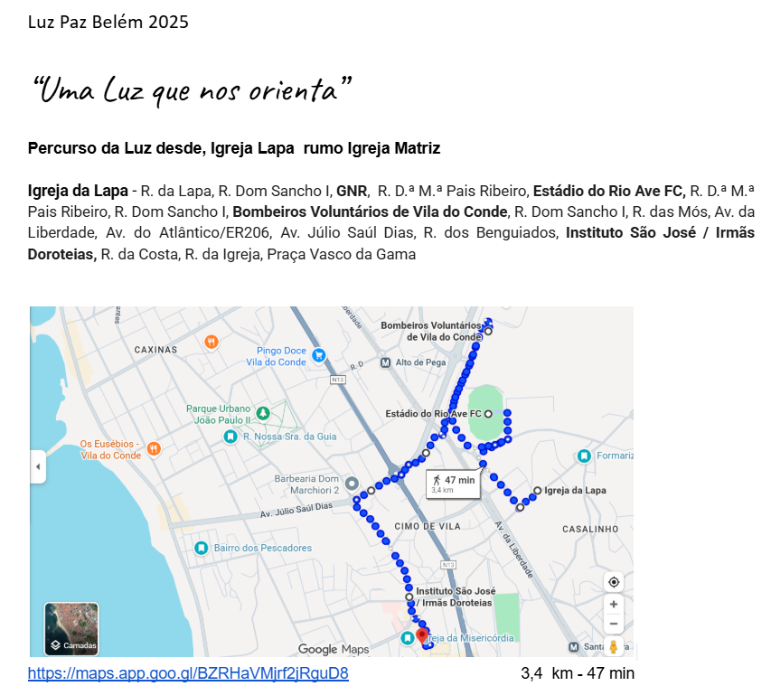
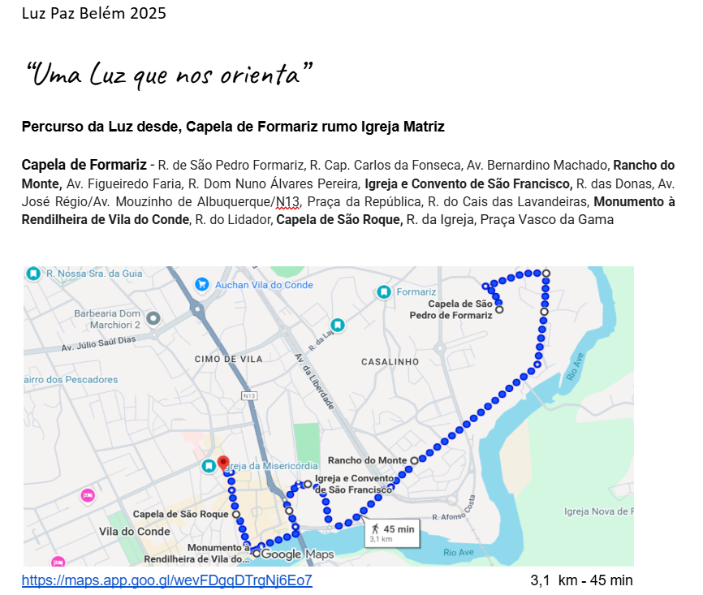
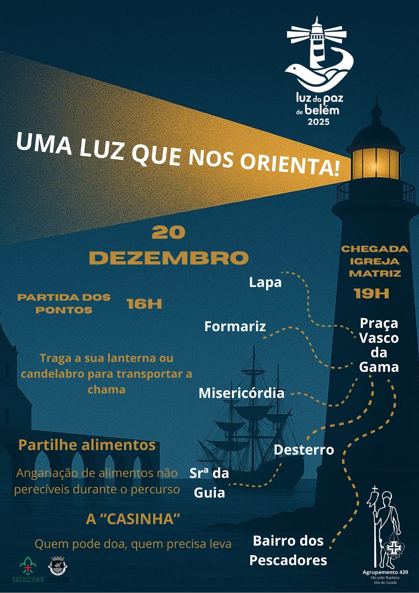
Portugal Precisa da Nossa Ajuda!
Missão solidária de recolha de bens para os bombeiros durante os incêndios. O nosso agrupamento uniu-se para apoiar quem nos protege, demonstrando o valor do serviço ao próximo.